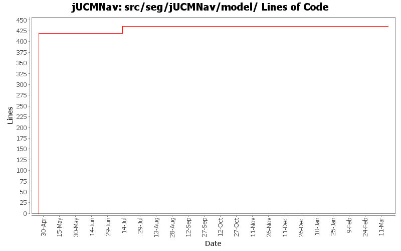

Summary Period: 2005-04-25 to 2006-03-17
[root]/src/seg/jUCMNav/model
 commands
(2 files, 45 lines)
commands
(2 files, 45 lines)
 changeConstraints
(9 files, 1150 lines)
changeConstraints
(9 files, 1150 lines)
 create
(24 files, 2852 lines)
create
(24 files, 2852 lines)
 delete
(25 files, 1876 lines)
delete
(25 files, 1876 lines)
 internal
(27 files, 3243 lines)
internal
(27 files, 3243 lines)
 transformations
(14 files, 2224 lines)
transformations
(14 files, 2224 lines)
 internal
(4 files, 488 lines)
internal
(4 files, 488 lines)
 ucm
(0 files, 0 lines)
ucm
(0 files, 0 lines)
 impl
(0 files, 0 lines)
impl
(0 files, 0 lines)
 util
(0 files, 0 lines)
util
(0 files, 0 lines)
 util
(12 files, 2145 lines)
util
(12 files, 2145 lines)
 modelexplore
(7 files, 251 lines)
modelexplore
(7 files, 251 lines)
 queries
(6 files, 726 lines)
queries
(6 files, 726 lines)

Total Lines Of Code:
435 (2006-03-31 18:01)
| Author | Changes | Lines of Code | Lines per Change |
|---|---|---|---|
| Totals | 43 (100.0%) | 435 (100.0%) | 10.1 |
| etremblay | 6 (14.0%) | 419 (96.3%) | 69.8 |
| jkealey | 19 (44.2%) | 16 (3.7%) | 0.8 |
| jpdaigle | 4 (9.3%) | 0 (0.0%) | 0.0 |
| jmcmanus | 4 (9.3%) | 0 (0.0%) | 0.0 |
| jfroy | 10 (23.3%) | 0 (0.0%) | 0.0 |
Fix bug 412 (default strategy and strategies group).
Removed redundant code for the creation of a new file (using jUCMNavLoader and ModelCreationFactory instead of static xml).
0 lines of code changed in:
Externalize String
0 lines of code changed in:
Added URNlink dialog, actions and commands
0 lines of code changed in:
Ended name change.
0 lines of code changed in:
Name change for EvaluationScenario (now called Strategy)
0 lines of code changed in:
Added first version of the GRL catalog import/export
0 lines of code changed in:
Added scenario author, color modification when scenario selected and fixed NullPointerException in Scenario view when closing the editor.
0 lines of code changed in:
Evaluation scenario view added.
0 lines of code changed in:
Merge of GRL branch with the main trunk
0 lines of code changed in:
Extracted a bunch of strings, translated language files to French.
0 lines of code changed in:
Merge grl branch with the main trunk
Major modification of the metamodel (URN_08.mdl) (Added GRL metamodel, New interfaces that define common element in GRL and UCM, Modified UCM-Map package to implement the new interfaces (some associations and attributes have been refactored using the interfaces), Map is now called UCMmap (to resolve conflict with java.util.map in the implementation), Removed Path Graph)
Modification of the code that used the metamodel.
Started modification of jUCMNav to support GRL.
0 lines of code changed in:
Lesson learned... Never try to make an SWT application in 3.1 for 3.0.... The layout won't work like you designed it in 3.1...
Added condition editing in the StubBindingDialog. Quick hack to take what was working in the 3.1 version done during the day and add it to the 3.0 version. The layout is not as nice though in 3.0.
0 lines of code changed in:
cleaned/commented (thankfully was already done) seg.jUCMNav.model.commands.changeConstraints
0 lines of code changed in:
cleaned/commented everything under seg.jUCMNav.model except the commands
16 lines of code changed in:
bug 335: palette wording
bug 344: extracted more strings
0 lines of code changed in:
bug 191 - connections; initial work implemented. a few bugs remain but are not critical; mostly delete issues concerning delete multinode which I want refactored anyways. todo: improve usability with drag & drop connections and element position
0 lines of code changed in:
JP: Mega commit! Fixed all 120 javadoc warnings on public members, and made the build script a tiny bit less verbose.
Added meaningful javadoc location where possible.
0 lines of code changed in:
bug 194 - pre/post conditions now appear on start/end. more tests pass! simply missing timer/wait. note that conditions on existing start/end points will overlap the label but for new start/end points, it should be positioned better.
0 lines of code changed in:
Updated behavior for displaying conditions (will only be displayed if there is a label to display)
0 lines of code changed in:
bug 280, bug 281 - cleaned up condition code. should no longer cause half the application to crash. can be deleted, can have their text changed. no restriction on which node connections can have conditions yet.
0 lines of code changed in:
(22 more)
Generated by StatCVS 0.2.4